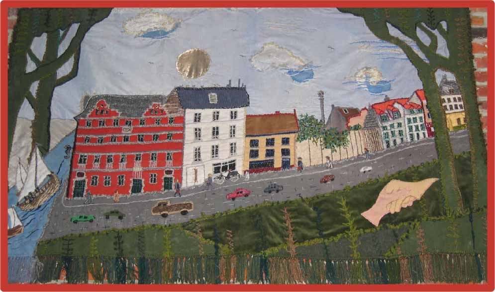

Tous ceux qui souhaitent contribuer peuvent le faire en faisant un
don numéro de compte de l'asbl Maison de la Paix: BE07 7350 1343
2666.
Pour les dons au numéro de compte BE80 7765 9023 3377 de l'asbl
Caritas Aide avec le message ‘Projet préféré n° 2012 Maison » de la
Paix’ et d'un montant de 40 € ou plus par an, le donateur reçoit une
attestation fiscale, délivrée par Caritas Aide vzw.
Voulez-vous travailler avec nous en tant que bénévole ou
souhaitez-vous contribuer d'une manière différente? N'hésitez pas à
nous contacter au
secretariaat@huisvanvrede.be